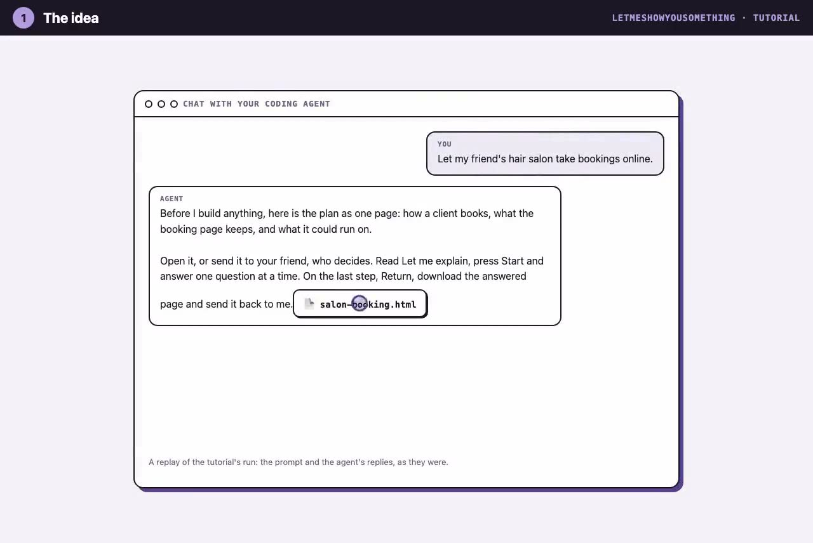
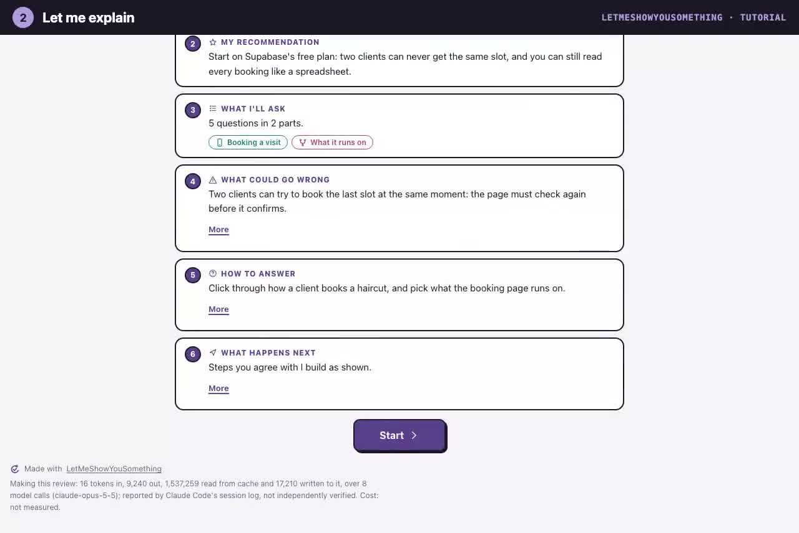
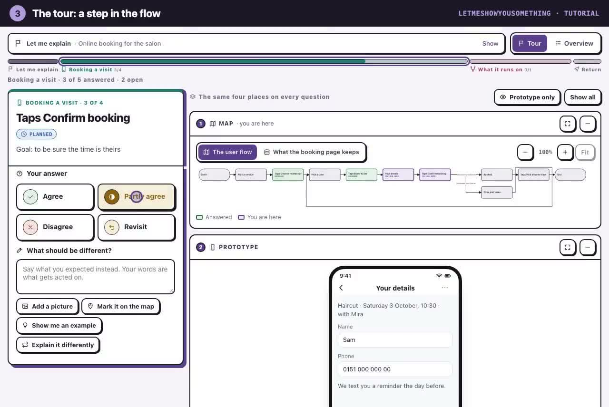
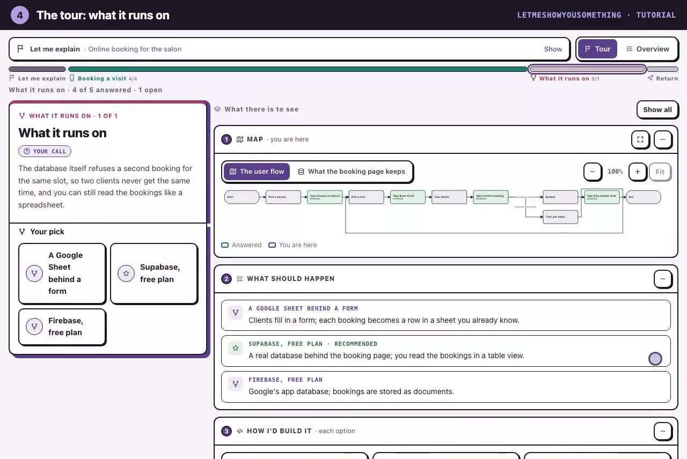
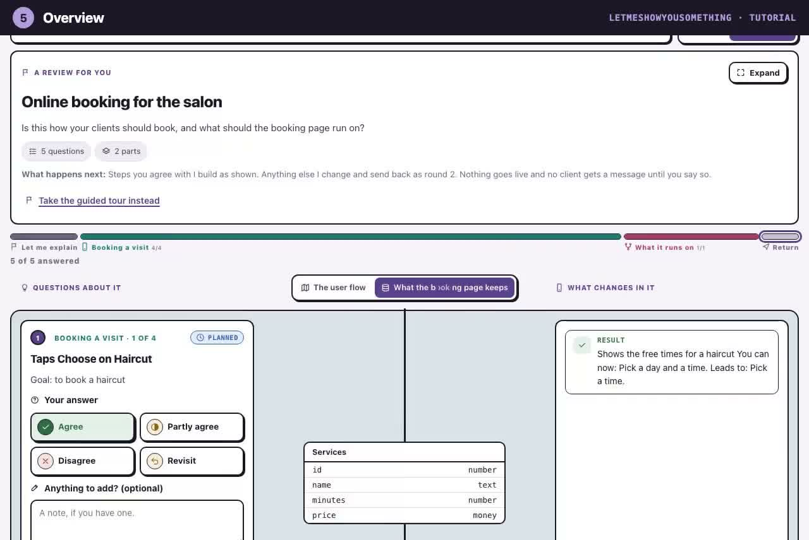
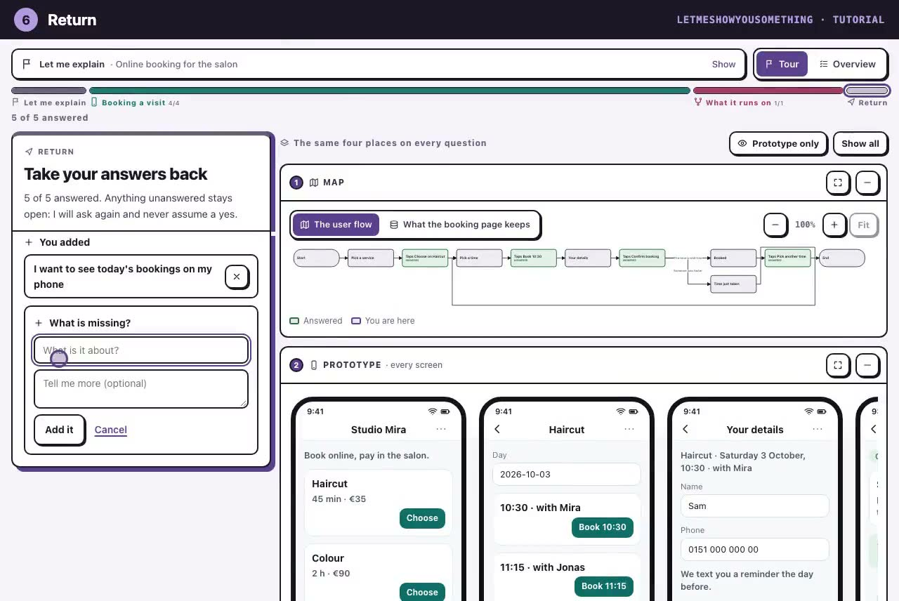
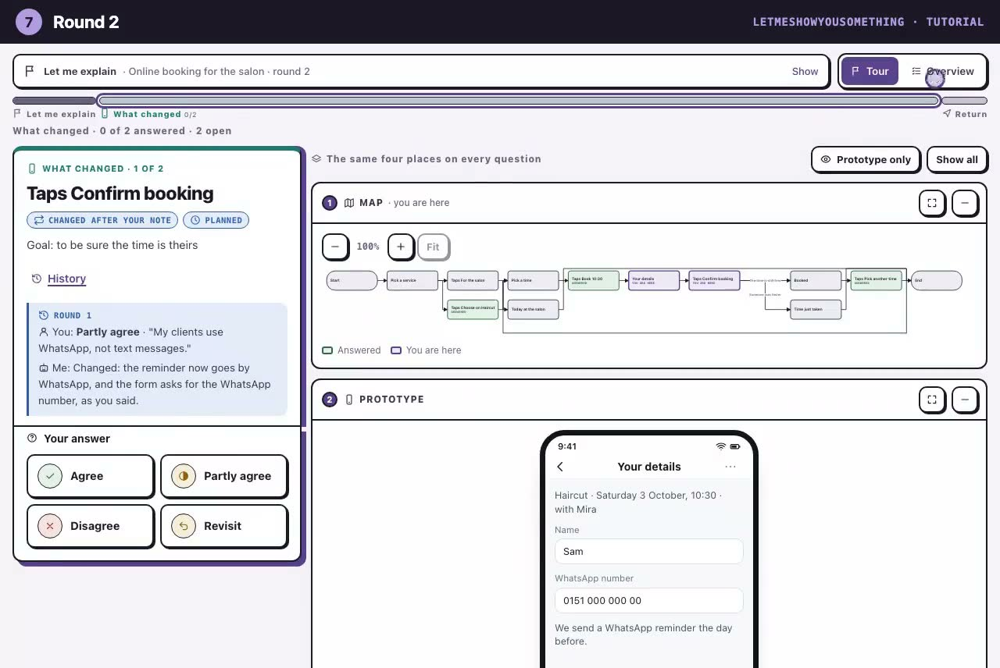

LetMeShowYouSomething
Your AI agent writes down what it needs you to judge, you answer on one offline page, and your answers go back to the agent as a file it checks before it acts.
npx skills add shyhunter/LetMeShowYouSomething -gInstalls the skill for Claude Code, Codex, Hermes and other agents that read skills. Then ask your agent, for example: "/letmeshowyousomething Explain to me how my app idea should look."
From an idea to a plan in 7 steps
One real run: an idea for a hair salon's online booking, from the first line to the second round.
- 1The ideaYou type one line; the agent answers with the plan as one page.

- 2Let me explainWhat it needs from you, its recommendation, what could go wrong.

- 3A step in the flowTap through the screens; agree, or say what should be different.

- 4What it runs onThree options side by side, with costs and a recommendation.

- 5OverviewEvery question beside its step and its screen, on one page.

- 6ReturnAdd what is missing, download your answers, give the file back.

- 7Round 2The agent checks your file and shows what changed, before and after.

agent ──► review.json ──► one HTML page ──► a person answers each question ──► downloads the answers agent ◄── check (PASS) ◄── the answered page or feedback.json, given back ◄────────────────┘
Let me show you more things
A salon's booking app is one use. See some other possible use cases below: tap one to see what you would ask your agent, then open the page it answers with. Each page is the real thing: press Start, answer, and download your answers on the last step. Nothing leaves your browser until you do.
Questions people ask
Does the person answering need an account, an install or internet?
No. The page is one HTML file that loads nothing from the network. Any browser, on a computer or a phone.
Does anything leave my browser?
Not until you send a file yourself. Answers stay in that browser while you work; downloading writes a file and sends nothing.
Does "Agree" let the agent go ahead?
No. An answer is an opinion. Before anything that deletes, sends, pays, publishes or contacts someone, the agent asks you in its own tool.
Which agents does it work with?
Any agent that can write files and run Node. It has been run with Claude Code, Codex and Hermes.
What does it cost?
Nothing: free and open source, with no paid version. Making a review uses your agent like any other task.
The format
Two files and the rules between them, so any agent, script or tool can write the question or read the answer.
Use it
It is an agent skill with no dependencies. Install it for the agents on your machine:
npx skills add shyhunter/LetMeShowYouSomething -g
Run with Claude Code, Codex and Hermes. The README has the other ways to install it and how to run the checker.
Privacy and terms: no cookies, no tracking, nothing sent.